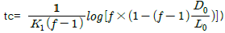
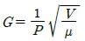
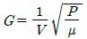
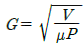
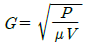
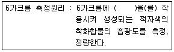
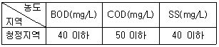
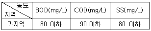
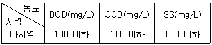
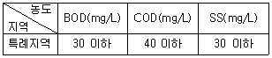

수질환경산업기사 (2011-03-20 기출문제)
1과목: 수질오염개론
1. 박테리아의 경험적인 화학적 분자식이 C5H7O2N일 때 10 g의 박테리아가 산화될 때 소모되는 이론 산소량은? (단, 박테리아의 질소는 암모니아로 전환됨)
- 10.1 g
- 12.4 g
- 14.2 g
- 16.2 g
(정답률: 83%)

2. 소수성 colloid 에 관한 설명으로 옳지 않은 것은?
- 물과 반발하는 성질을 가지고 있다.
- 물 속에 현탁상태로 존재한다.
- 매우 작은 입자로 존재한다.
- 염에 대하여 큰 영향을 받지 않는다.
(정답률: 82%)
3. 깊은 호수나 저수지의 수직방향의 물 운동이 없을 때 생기는 성층현상(成層現象)의 성층 구분 순서로 맞는 것은? (단, 수표면으로부터)
- Epilimnion → Thermocline → Hypolimnion → 침전물층
- Epilimnion → Hypolimnion → Thermocline → 침전물층
- Hypolimnion → Thermocline → Epilimnion → 침전물층
- Hypolimnion → Epilimnion → Thermocline → 침전물층
(정답률: 93%)
4. 인구 50만의 신도시가 건설되어 인구 1명당 하루에 BOD 500mg/L , 200 L 씩의 물을 하천으로 배출한다. 하수유입 전 하천수의 유량이 100,000m3/day이고 BOD가 4.0mg/L 이었다면 하수 유입 후의 하천의 BOD는? (단, 완전혼합 , 합류점 기준)
- 238 mg/L
- 252 mg/L
- 282 mg/L
- 296 mg/L
(정답률: 79%)
5. pH 2인 용액은 pH 5인 용액보다 몇 배 더 산성인가?
- 3
- 300
- 1000
- 296
(정답률: 97%)
6. 부영양화의 방지 대책과 가장 거리가 먼 것은?
- N , P 유입을 방지하여야 한다.
- 조류의 번식을 방지하기 위해 CaCO3를 살포한다.
- 포기(aeration)등의 방법으로 저 산소층을 제거한다.
- 영양염류를 침전시키고 이 침전 물질을 불활성화시켜야 한다.
(정답률: 71%)
7. Na+ 368mg/L, Ca2+ 200mg/L, Mg2+264mg/L인 농업용수가 있다. 이 때 SAR(SodiumAdsorption Rate)의 값은? (단, Na의 원자량 : 23 , Ca의 원자량 : 40 , Mg의 원자량 : 24)
- 4
- 8
- 16
- 32
(정답률: 66%)
8. 5% NaCl의 M농도는? (단, NaCl 화학식량 = 58.5 , 용액비중은 1.0)
- 0.35M
- 0.55M
- 0.85M
- 1.25M
(정답률: 83%)
9. 물 500mL에 NaOH 0.08g을 용해시킨 용액의 pH는?(오류 신고가 접수된 문제입니다. 반드시 정답과 해설을 확인하시기 바랍니다.)
- 2.4
- 2.7
- 11.3
- 11.6
(정답률: 52%)
10. 어느 하천의 DO가 7.3mg/L , BODu가 17mg/L이었다. 이 때 용존산소곡선(DO Sag Curve)에서 임계점에 달하는 시간은? (단, 온도는 20℃, 용존산소 포화량 9.2mg/L , K1 =0.1/day, K2 =0.3/day,

, f=K2/K1)- 약 2일
- 약 4일
- 약 6일
- 약 8일
(정답률: 59%)
11. 하천의 수질모델인 DO Sag - ⅠㆍⅡ 에 관한 설명으로 옳지 않은 것은?
- 1차원 정상상태 모델이다.
- 저질의 영향 및 광합성 작용에 의한 DO반응을 고려한 모델이다.
- 점오염원과 비점오염원이 하천의 DO에 미치는 영향을 나타낼 수 있다.
- Streeter-Phelps 식을 기본으로 한다.
(정답률: 44%)
12. 물의 물리 화학적 특성에 관한 설명으로 가장 거리가 먼 것은?
- 물은 고체상태인 경우 수소결합에 의해 육각형 결정구조를 가진다.
- 물(액체)분자는 H+ 와 OH- 의 극성을 형성하므로 다양한 용질에 유효한 용매이다.
- 물은 광합성의 수소 공여체이며 호흡의 최종산물로서 생체의 중요한 대사물이 된다.
- 물은 융해열이 크지 않기 때문에 생명체의 결빙을 방지 할 수 있다.
(정답률: 95%)
13. 어느 폐수의 BODu 가 200mg/L이며 K1(상용대수)값이 0.2/day 라면 5일 후 남아 있는 BOD는?
- 25 mg/L
- 20 mg/L
- 15 mg/L
- 10 mg/L
(정답률: 90%)
14. BOD 20mg/L 인 하수처리장 유출수가 50,000m3/day로 방출되고 있다. 하수가 방출되기 전에 하천의 BOD는 3mg/L 이며, 유량은 5.8m3/sec 이다. 방출된 하수가 하천수에 의해 완전 혼합된다고 한다면 혼합지점에서의 BOD 총량(kg/day)은?
- 503
- 1503
- 2503
- 3503
(정답률: 64%)
15. 0.02M-KBr과 0.03M-SO4를 함유하고 있는 용액의 이온강도는? (단, 완전히 해리 기준)
- 0.06
- 0.11
- 0.14
- 0.18
(정답률: 62%)
16. 수온이 20℃이고 재포기 계수가 0.2/day인 수체에서 수온이 15℃로 변할 때의 재포기 계수는? (단, 온도보정계수는 1.024)
- 0.169/day
- 0.178/day
- 0.187/day
- 0.192/day
(정답률: 72%)
17. 어떤 용액의 NaOH 농도가 0.02M이다. 이 농도를 mg/L 단위로 옳게 표시한 것은? (단, Na 원자량은 23임)
- 200
- 400
- 600
- 800
(정답률: 52%)
18. 미생물군 중에서 에너지원으로 빛을 이용하며 유기탄소를 탄소원으로 이용하는 미생물군은?
- 광합성 독립영양 미생물
- 화학합성 독립영양 미생물
- 광합성 종속영양 미생물
- 화학합성 종속영양 미생물
(정답률: 78%)
19. Glucose(C6H12O6) 400mg/L 용액을 호기성 처리시 필요한 이론적 인량(P, mg/L)은? (단, BOD5 : N : P = 100 : 5 : 1 , K1 =0.1/day-1, 상용대수기준)
- 약 1.6
- 약 2.9
- 약 3.8
- 약 4.6
(정답률: 54%)
20. 해수의 주요 성분(Holy seven)으로 볼 수 없는 것은?
- 중탄산염
- 마그네슘
- 아연
- 황
(정답률: 71%)
2과목: 수질오염방지기술
21. 하수고도처리에 적용하는 생물학적 인제거 공정인 연속 회분식 반응조에 관한 설명으로 옳지 않은 것은?
- 설계자료가 제한적이다.
- 소유량에 적합하지 않다.
- 수리학적 과부하에서도 MLSS의 누출이 없다.
- 질소, 인 동시 제거 시 운전의 유연성이 크다.
(정답률: 34%)
22. SS 가 10,000ppm인 분뇨를 전처리에서 15% 그리고 1차 처리에서 70%의 SS를 제거하였을 때 1차처리 후 유출되는 분뇨의 SS 농도는?
- 약 2350 ppm
- 약 2550 ppm
- 약 2750 ppm
- 약 2950 ppm
(정답률: 68%)
23. 유량이 5,000m3/day이고 포기조의 MLSS 4,500kg이다. F/M비(kg/kgㆍday)를 0.25로 유지하기 위해서는 유입수의 BOD농도를 얼마로 유입시켜야 되는가?
- 225 mg/L
- 325 mg/L
- 375 mg/L
- 475 mg/L
(정답률: 55%)
24. 응집제로 많이 사용되고 있는 황산알루미늄의 장점에 대한 설명과 가장 거리가 먼 것은?
- 여러 폐수에 적용이 가능하다.
- 결정은 부식 자극성이 거의 없고 취급이 용이하다.
- 저렴하고 독성이 거의 없기 때문에 대량 첨가가 가능하다.
- 철염보다 플럭(floc)이 무겁다.
(정답률: 70%)
25. 생물학적 공정의 인제거 공정 중 A/O 프로세스에 관한 설명으로 옳지 않은 것은?
- 높은 BOD/P 비가 요구된다.
- 비교적 수리학적 체류시간이 짧다.
- 높은 정도의 질소와 인의 동시 제거가 어렵다.
- 공정의 운전 유연성이 크다.
(정답률: 48%)
26. 어느 특정한 산화지에 대해 1일 BOD부하를 10kg/day-m2 으로 설계하였다. 평균 유량이 3m2/min이고 BOD농도가 300mg/L 일 때 필요한 면적(m2)dms? (단, 비중은 1.0 으로 가정함)
- 약 90
- 약 110
- 약 130
- 약 150
(정답률: 71%)
27. 혐기성 반응기에 있어서 생물학적 고형물량을 유지하고 증가시키는 방법으로 옳지 않은 것은?
- 짧은 수리학적 체류시간으로의 시스템 운전
- 시스템내의 고형물을 유지하는 농후한 슬러지 블랭킷의 개발
- 시스템에서 박테리아가 자라고 유지될 수 있는 고정된 표면의 제공
- 반응기 유출수로부터의 고형물의 분리 및 이 고형물의 반응기로의 재순환
(정답률: 74%)
28. 슬러지 함수율이 95%에서 80%로 줄어들면 슬러지의 부피는? (단, 슬러지 비중은 1.0)
- 1/9 로 감소한다.
- 1/6 로 감소한다.
- 1/5 로 감소한다.
- 1/4 로 감소한다.
(정답률: 66%)
29. 화학합성을 하는 자가영양계미생물의 에너지원과 탄소원으로 옳은 것은? (순서대로 에너지원, 탄소원)
- 무기물의 산화환원반응 , 유기탄소
- 무기물의 산화환원반응 , CO2
- 유기물의 산화환원반응 , 유기탄소
- 유기물의 산화환원반응 , CO2
(정답률: 71%)
30. 직경이 1.0m이고 비중이 3.0인 입자를 17℃의 물에 넣었다. 입자가 2m 침강하는데 걸리는 시간은? (단, 17℃의 물의 점성계수는 1.089×10-3kg/mㆍs, Stokes 침강이론 기준)
- 2초
- 16초
- 38초
- 56초
(정답률: 58%)
31. 폐수 플럭 형성탱크에서 속도구배(G) , 유체의 점도(μ) , 소요동력(P)과 탱크부피(V)의 관계식 표현이 적절한 것은? (단, 단위는 적절하다고 가정함)




(정답률: 79%)
32. 도금폐수가 100m3/일 로 유입되고 CN 농도가 300mg/L이었다. 이 폐수를 알칼리 염소법으로 처리하고자 할 때 요구되는 이론적 염소량(Cl2)은? (단, 2CN- +5Cl2 +4H2O → 2CO2 +N2 +8HCl+2Cl- , Cl2 분자량 : 71)
- 121.7 kg/day
- 142.3 kg/day
- 168.2 kg/day
- 204.8 kg/day
(정답률: 58%)
33. 가압부상조 설계에 있어서 유량이 2000m3/day인 폐수 내에 SS 농도가 250mg/L , 공기의 용해도는 18.7mL/L 이라고 할 때 압력이 4기압인 부상조에서의 A/S 비는? (단, 용존공기의 분율은 0.5 이며 반송은 고려하지 않음)
- 0.027
- 0.048
- 0.064
- 0.097
(정답률: 55%)
34. 염소요구량이 8mg/L인 하수에 잔류염소의 농도가 0.5mg/L가 되도록 하기 위해서 주입하여야 하는 염소량은?
- 4 mg/L
- 7.5 mg/L
- 8.5 mg/L
- 10 mg/L
(정답률: 75%)
35. 유입기질 5g BODu 을 혐기성 분해시 발생되는 이론적인 CH4 량은 표준상태에서 몇 L 인가?
- 1.38 L
- 1.48 L
- 1.75 L
- 1.89 L
(정답률: 52%)
36. BOD 1000mg/L , 폐수량 1000m3/일의 공정폐수를 BOD 용적부하 0.4kg/m3·일의 활성 슬러지법으로 처리하는 경우 포기조의 수심을 5m로 하면 포기조의 표면적은?
- 400m2
- 500m2
- 600m2
- 700m2
(정답률: 70%)
37. 600m3인 포기조에 1000m3/day으로 폐수가 유입될 때 포기시간(hr)은? (단, 반송슬러지는 고려하지 않음)
- 11.6 hr
- 12.6 hr
- 13.2 hr
- 14.4 hr
(정답률: 71%)
38. 활성슬러지법에서 포기조 내 처리상황이 악화되었을 때 검토해야 할 사항과 가장 거리가 먼 것은?
- 유입수의 유해성분 유무조사
- MLSS가 적정 유지되는가를 조사
- 유입수의 pH 변동 유무를 조사
- 원폐수의 SS 농도 변동 유무를 조사
(정답률: 71%)
39. 어느 하수 처리장의 포기조 용적이 800m3, MLSS가 3000mg/L , 그리고 SRT(고형물 체류시간)가 3일이라면 1일 생산되는 슬러지의 건조중량은?
- 0.8 ton
- 1.6 ton
- 2.4 ton
- 3.2 ton
(정답률: 60%)
40. 유입수량이 4,000m3/day이고, BOD 는 200mg/L, SS 는 150mg/L 일 때 침전지의 깊이를 3m , 체류시간을 4시간으로 할 때 침전지의 표면부하율은?
- 12 m3/m2·day
- 14 m3/m2·day
- 16 m3/m2·day
- 18 m3/m2·day
(정답률: 26%)
3과목: 수질오염공정시험방법
41. 0.⑤N-KMnO4 4.0L를 만들려고 한다. KMnO>4는 약 몇 g 이 필요한가? (단, 원자량은 K=39, Mn =55 이다.)
- 3.2
- 4.6
- 5.2
- 6.3
(정답률: 48%)
42. 흡광광도법으로 측정하고자 할 때 투과율 30% 의 흡광도는?
- 0.699
- 0.643
- 0.572
- 0.523
(정답률: 59%)
43. 페놀류 측정에 관한 설명으로 옳지 않은 것은?(단, 흡광광도법 기준)
- 적색의 안티피린계색소의 흡광도를 측정하는 방법으로 수용액에서는 510nm에서 측정한다.
- 적색의 안티피린계색소의 흡광도를 측정하는 방법으로 클로로포름용액에서는 460nm에서 측정한다.
- 정량범위는 추출법일 때 0.01~0.⑤mg 이다.
- 정량범위는 직접법일 때 0.⑤~0.5mg 이다.
(정답률: 73%)
44. DO 측정 시 윙클러-아지드화나트륨 변법의 정량범위 기준으로 옳은 것은?
- 0.01 mg/L 이상
- 0.⑤ mg/L 이상
- 0.1 mg/L 이상
- 0.5 mg/L 이상
(정답률: 64%)
45. 시안 측정 시 초산아연 용액을 주입하여 제거하는 시료 내 물질은? (단, 흡광광도법 기준)
- 알루미늄 및 철
- 잔류염소
- 유지류
- 황화합물
(정답률: 68%)
46. 수질오염공정시험기준상의 색도 시험방법(투과율법)에 관한 설명으로 옳지 않은 것은?
- 시료 중의 부유물질은 제거하여야 한다.
- 색도의 측정은 시각적으로 눈에 보이는 색상에 관계없이 단순 색도차 또는 단일 색도차를 계산하는데 아담스-니컬슨의 색도공식을 근거로 하고 있다.
- 백금-코발트 표준물질과 아주 다른 색상의 폐하수에서는 적용할 수 없다.
- 백금-코발트 표준물질과 비슷한 색상의 폐하수에서 적용할 수 있다.
(정답률: 80%)
47. 취급 또는 저장하는 동안에 기체 또는 미생물이 침입하지 아니하도록 내용물을 보호하는 용기는?
- 차광용기
- 밀봉용기
- 기밀용기
- 밀폐용기
(정답률: 74%)
48. 다음 측정항목 중 시료의 최대보존기간이 가장 짧은 것은?
- 시안
- 클로로필-a
- 부유물질
- 색도
(정답률: 74%)
49. 수질오염공정시험기준의 총칙에 관한 설명으로 옳지 않은 것은?
- 온도의 영향이 있는 실험결과 판정은 표준온도를 기준으로 한다.
- 찬 곳은 따로 규정이 없는 한 4~20℃의 곳을 뜻한다.
- 제반시험 조작은 따로 규정이 없는 한 상온에서 실시한다.
- 기체의 농도는 표준상태(0℃, 1기압, 비교습도 0%)로 환산 표시한다.
(정답률: 88%)
50. 다음 중 시안 정량에 사용되지 않는 시약은? (단, 흡광광도법 기준)
- 염화암모늄
- 에틸알코올
- 수산화나트륨
- 초산
(정답률: 40%)
51. 중크롬산칼륨에 의한 화학적 산소요구량 특정 시“시료적당량” 에 관한 설명으로 가장 적합한 것은?
- 1시간 동안 끓인 다음 최초에 넣은 0.025N-중크롬산칼륨용액의 약 1/2이 남도록 취한다.
- 1시간 동안 끓인 다음 최초에 넣은 0.025N-중크롬산칼륨용액의 약 1/3이 남도록 취한다.
- 2시간 동안 끓인 다음 최초에 넣은 0.025N-중크롬산칼륨용액의 약 1/2이 남도록 취한다.
- 2시간 동안 끓인 다음 최초에 넣은 0.025N-중크롬산칼륨용액의 약 1/3이 남도록 취한다.
(정답률: 46%)
52. 개수로에 의한 유량측정 시 평균유속은 Chezy의 유속공식을 적용한다. 여기서 경심에 대한 설명으로 옳은 것은?
- 유수단면적을 윤변으로 나눈 것을 말한다.
- 수로의 중앙지점의 수심을 말한다.
- 측정지점에서 평균단면적을 말한다.
- 흄바닥의 경사를 말한다.
(정답률: 67%)
53. 철을 흡광광도법과 원자흡광광도법으로 측정하고자 한다. 각각의 측정파장은?
- 흡광광도법 : 460nm , 원자흡광광도법 : 259.9nm
- 흡광광도법 : 510nm , 원자흡광광도법 : 248.3nm
- 흡광광도법 : 620nm , 원자흡광광도법 : 259.9nm
- 흡광광도법 : 650nm , 원자흡광광도법 : 248.3nm
(정답률: 68%)
54. 다음 중 시료를 질산-과염소산으로 전처리하여야 하는 경우로 가장 적합한 것은?
- 유기물 함량이 비교적 높지 않고 금속의 수산화물, 산화물, 인산염 및 황화물을 함유하고 있는 시료를 전처리하는 경우
- 유기물을 다량 함유하고 있으면서 산화분해가 어려운 시료를 전처리하는 경우
- 다량의 점토질 또는 규산염을 함유한 시료를 전처리하는 경우
- 유기물 등을 많이 함유하고 있는 대부분의 시료를 전처리하는 경우
(정답률: 40%)
55. 수로의 구성, 재질, 수로단면의 형상, 기울기 등이 일정하지 않은 개수로에서 부표를 사용하여 유속을 측정한 경과 수로의 평균 단면적이 1.6m2, 표면최대유속은 2.4m/sec이라면 이 수로에 흐르는 유량(m3/sec)은?
- 약 2.88
- 약 3.66
- 약 4.33
- 약 5.88
(정답률: 68%)
56. 다음 ( ) 안에 옳은 내용은? (단, 흡광광도법 기준)

- 디아조화페닐
- 디에틸디티오카르바민산나트륨
- 아스코르빈산은
- 디페닐카르바지드
(정답률: 67%)
57. 이온 전극법의 특징으로 옳지 않은 것은?
- 이온농도의 측정범위는 일반적으로 10-4mol/L~10-7mol/L(또는 10-9mol/L)이다.
- 측정용액의 온도가 10℃ 상승하면 전위기울기는 1가 이온이 약 2 mV, 2가 이온이 약 1 mV 변화한다.
- 이온전극의 종류나 구조에 따라 사용 가능한 pH 범위가 있다.
- 시료용액의 교반은 이온전극의 전극범위, 응답속도, 정량한계 값에 영향을 나타낸다.
(정답률: 59%)
58. 다음 중 4각 위어에 의한 유량측정 공식은? (단, Q : 유량(m3/min), K : 유량계수, h : 위어의 수두(m), b : 절단의 폭(m))
- Q=Kh5/2
- Q=Kh3/2
- Q=Kbh5/2
- Q=Kbh3/2
(정답률: 91%)
59. BOD 시험을 위한 시료의 전처리에 관한 내용으로 옳지 않은 것은?
- pH가 6.5~8.5의 범위를 벗어나는 시료는 염산(1+11) 또는 4% 수산화나트륨 용액으로 시료를 중화 하여 pH 7로 한다.
- 중화를 위해 산성 또는 알칼리성 시료에 넣어주는 알칼리 또는 산의 양은 시료양의 0.5%가 넘지 않도록 한다.
- 일반적으로 잔류염소가 함유된 시료는 23~25℃에서 5분간 통기하여 염소이온을 탈기시킨 후 방냉한다.
- 시료는 시험하기 바로 전에 온도를 20±1℃로 조정한다.
(정답률: 53%)
60. 흡광광도계의 흡수셀 중 자외부 파장범위에 사용되는 흡수셀의 재질은?
- 유리
- 석영
- 플라스틱
- 아크릴
(정답률: 87%)
4과목: 수질환경관계법규
61. 비점오염원관리대책에 포함되는 사항과 가장 거리가 먼 것은? (단, 그 밖에 관리지역의 적정한 관리를 위하여 환경부령이 정하는 사항은 제외)
- 관리현황
- 관리목표
- 관리대상 수질오염물질의 종류 및 발생량
- 관리대상 수질오염물질의 발생예방 및 저감방안
(정답률: 60%)
62. 수질 및 수생태계 환경기준 중 해역의 사람의 건강보호를 위한 전수역의 수질환경기준으로 옳은 것은?
- 시안 : 검출되어서는 안됨
- 비소 : 0.⑤ mg/L
- 수은 : 0.001 mg/L
- 음이온 계면활성제 : 0.1 mg/L
(정답률: 64%)
63. 다음 수질오염방지시설 중 물리적 처리시설에 해당되는 것은?
- 침전물 개량시설
- 흡착시설
- 응집시설
- 폭기시설
(정답률: 65%)
64. 다음 위임업무 보고사항 중 연간 보고 횟수가 가장 적은 것은?
- 과징금 징수 실적 및 체납처분 현황
- 골프장 맹ㆍ고독성 농약 사용 여부 확인 결과
- 비점오염원의 설치신고 및 방지시설 설치현황 및 행정처분 현황
- 환경기술인의 자격별ㆍ업종별 신고상황
(정답률: 70%)
65. 해당부과기간의 시작일 전 1년 6개월 동안 방류수 수질기준을 초과하지 아니한 사업자의 기본배출부과금 감면율로 옳은 것은?
- 100분의 20
- 100분의 30
- 100분의 40
- 100분의 50
(정답률: 61%)
66. 조류경보 단계 중 조류대발생경보시 취수장, 정수장 관리자가 조치하여야 하는 사항과 가장 거리가 먼것은?
- 취수구 주변 방어막 설치 및 조류제거 실시
- 정수처리강화(활성탄처리, 오존처리)
- 정수의 독소분석 실시
- 조류증식 수심 이하로 취수구 이동
(정답률: 75%)
67. 환경정책기본법상 적용되는 용어의 정의로 옳지 않은 것은?
- 생활환경이라 함은 대기, 물, 폐기물, 소음ㆍ진동, 악취, 일조 등 사람의 일상생활과 관계되는 환경을 말한다.
- 환경보전이라 함은 환경오염 및 환경훼손으로부터 환경을 보호하고 오염되거나 훼손된 환경을 개선함과 동시에 쾌적한 환경의 상태를 유지, 조성하기 위한 행위를 말한다.
- 환경용량이라 함은 환경의 질을 유지하며 환경오염 또는 환경훼손을 복원할 수 있는 능력을 말한다.
- 환경훼손이라 함은 야생 동, 식물의 남획 및 그 서식지의 파괴, 생태계질서의 교란, 자연경관의 훼손, 표토의 유실 등으로 인하여 자연환경의 본래적 기능에 중대한 손상을 주는 상태를 말한다.
(정답률: 72%)
68. [오염총량관리기본방침]에 포함될 사항과 가장 거리가 먼 것은?
- 오염총량관리지역 지정 및 고시기준
- 오염원의 조사 및 오염부하량 산정방법
- 오염총량관리의 대상 수질오염물질 종류
- 오염총량관리의 목표
(정답률: 58%)
69. 기타 수질오염원을 설치 또는 관리하고자 하는 자는 환경부령이 정하는 바에 의하여 환경부장관에게 신고하여야 한다. 이 규정에 의한 신고를 하지 아니하고 기타 수질오염원을 설치 또는 관리한 자에 대한 벌칙기준으로 옳은 것은?
- 500만원 이하의 벌금
- 1년 이하의 징역 또는 1천만원 이하의 벌금
- 2년 이하의 징역 또는 1천5백만원 이하의 벌금
- 2년 이하의 징역 또는 2천만원 이하의 벌금
(정답률: 77%)
70. 개선명령을 받은 자가 개선명령을 이행하지 아니하거나 기간 이내에 이행은 하였으나 검사결과가 배출허용기준을 계속 초과할 때의 처분인 “조업정지명령”을 위반한 자에 대한 벌칙기준은?
- 3년 이하의 징역 또는 1천5백만원 이하의 벌금에 처한다.
- 3년 이하의 징역 또는 2천만원 이하의 벌금에 처한다.
- 5년 이하의 징역 또는 3천만원 이하의 벌금에 처한다.
- 7년 이하의 징역 또는 5천만원 이하의 벌금에 처한다.
(정답률: 50%)
71. 2013년 1월 1일 이후에 적용되는 폐수종말처리시설의 BOD(mg/L) 방류수 수질기준으로 옳은 것은?(단, Ⅲ지역 기준)
- 5 이하
- 10 이하
- 15 이하
- 20 이하
(정답률: 65%)
72. 배출부과금 부과 시 고려해야할 사항과 가장 거리가 먼 것은?
- 배출허용기준 초과 여부
- 배출되는 수질오염물질의 종류
- 수질오염물질의 배출기간
- 수질오염방지시설 설치여부
(정답률: 65%)
73. 법률에서 사용되는 용어의 정의로 옳지 않은 것은?
- 강우 유출수 : 비점오염원의 수질오염물질이 섞여 유출되는 빗물 또는 눈녹은 물 등을 말한다.
- 불투수층 : 빗물 또는 눈 녹은 물 등이 지하로 스며들 수 없게 하는 인공 지하 구조물, 암반 등을 말한다.
- 기타 수질오염원 : 점오염원 및 비점오염원으로 관리되지 아니하는 수질오염 물질을 배출하는 시설 또는 장소로서 환경부령이 정하는 것을 말한다.
- 수질오염물질 : 수질오염의 요인이 되는 물질로서 환경부령이 정하는 것을 말한다.
(정답률: 54%)
74. 환경부장관이 대권역별로 수질 및 수생태계 보전을 위한 기본계획을 수립하고자 할 때 계획에 포함되어야 하는 사항과 가장 거리가 먼 것은?
- 수질 및 수생태계 변화추이 및 목표기준
- 수질오염물질 처리현황 및 계획
- 점오염원, 비점오염원 및 기타 수질오염원의 분포현황
- 점오염원, 비점오염원 및 기타 수질오염원에 의한 수질 오염물질 발생량
(정답률: 38%)
75. 다음 중 국가환경종합계획에 포함되어야 하는 사항과 가장 거리가 먼 것은?
- 자연환경의 현황 및 전망
- 사업의 시행에 소요되는 비용의 산정 및 재원조달방법
- 환경개선 목표의 설정과 환경의 변화 전망
- 인구, 산업, 경제, 토지 및 해양의 이용 등 환경변화 여건에 관한 사항
(정답률: 38%)
76. 폐수처리업의 등록기준 중 폐수재이용업의 기술능력 기준으로 옳은 것은?
- 수질환경산업기사, 화공산업기사 중 1명 이상
- 수질환경산업기사, 대기환경산업기사, 화공산업기사 중 1명 이상
- 수질환경기사, 대기환경기사 중 1명 이상
- 수질환경산업기사, 대기환경기사 중 1명 이상
(정답률: 79%)
77. 수질 및 수생태계 정책 심의 위원회에 관한 설명으로 옳지 않은 것은?(관련 규정 개정전 문제로 여기서는 기존 정답인 2번을 누르면 정답 처리됩니다. 자세한 내용은 해설을 참고하세요.)
- 위원회의 위원장은 환경부 장관이다.
- 위원회의 운영 등에 관하여 필요한 사항은 환경부령으로 정한다.
- 수계, 호소 등의 관리 우선순위 및 관리대책에 관한 사항을 심의한다.
- 위원회는 위원장과 부위원장 각 1인을 포함한 20인 이내의 위원으로 구성한다.
(정답률: 75%)
78. 폐수처리업에 종사하는 기술요원을 교육하는 기관으로 옳은 곳은?
- 국립환경인력개발원
- 보건환경연구원
- 국립환경과학원
- 한국환경공단
(정답률: 67%)
79. 1일 폐수배출량이 2,000m3 미만인 규모의 지역별, 항목별 배출허용기준으로 옳지 않은 것은?




(정답률: 73%)
80. 낚시제한구역 안에서 낚시를 하고자 하는 자는 낚 시의 방법, 시기 등 환경부령이 정하는 사항을 준수하여야 한다. 이러한 규정에 의한 제한사항을 위반하여 낚시제한구역 안에서 낚시행위를 한 자에 대한 과태료 부과기준은?
- 30만원 이하의 과태료
- 50만원 이하의 과태료
- 100만원 이하의 과태료
- 300만원 이하의 과태료
(정답률: 70%)
1 mol의 박테리아 분자량 = 5 × 12 + 7 × 1 + 2 × 16 + 1 × 14 = 113 g/mol
10 g의 박테리아 분자수 = 10 g / 113 g/mol = 0.0885 mol
박테리아 분자당 소모되는 이론 산소량 = 2 mol
따라서 10 g의 박테리아가 산화될 때 소모되는 이론 산소량은 다음과 같이 계산할 수 있습니다.
이론 산소량 = 0.0885 mol × 2 mol/mol = 0.177 mol
이론 산소량 = 0.177 mol × 32 g/mol = 5.664 g
하지만 문제에서 박테리아의 질소가 암모니아로 전환된다고 했으므로, 이론 산소량에 질소의 분자량을 더해줘야 합니다.
암모니아 분자량 = 1 × 14 + 3 × 1 = 17 g/mol
암모니아 분자당 생기는 이론 산소량 = 0.5 mol
따라서 10 g의 박테리아가 산화될 때 소모되는 이론 산소량은 다음과 같이 계산할 수 있습니다.
이론 산소량 = (0.0885 mol × 2 mol/mol) + (0.0885 mol × 0.5 mol/mol)
이론 산소량 = 0.13275 mol
이론 산소량 = 0.13275 mol × 32 g/mol = 4.248 g
따라서 정답은 "14.2 g"이 아니라 "4.248 g"입니다.